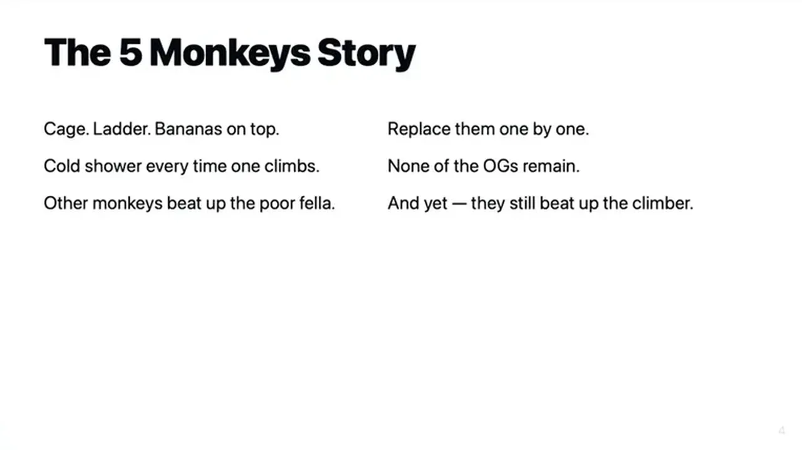
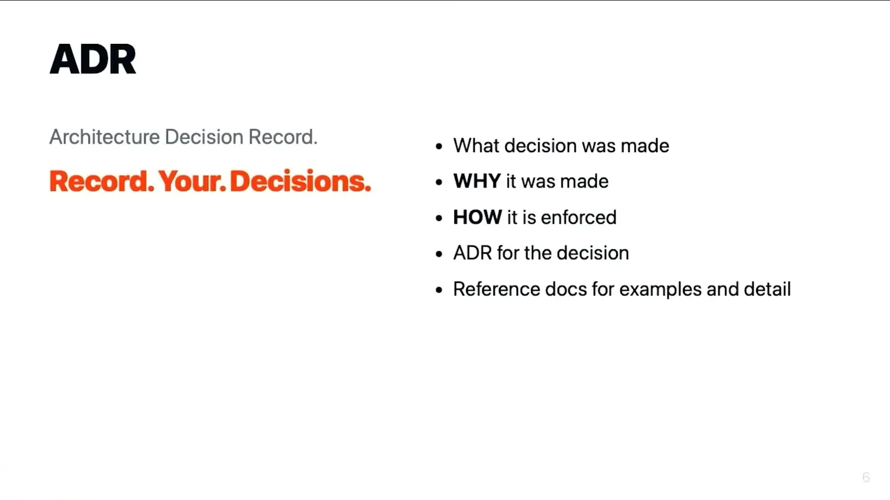
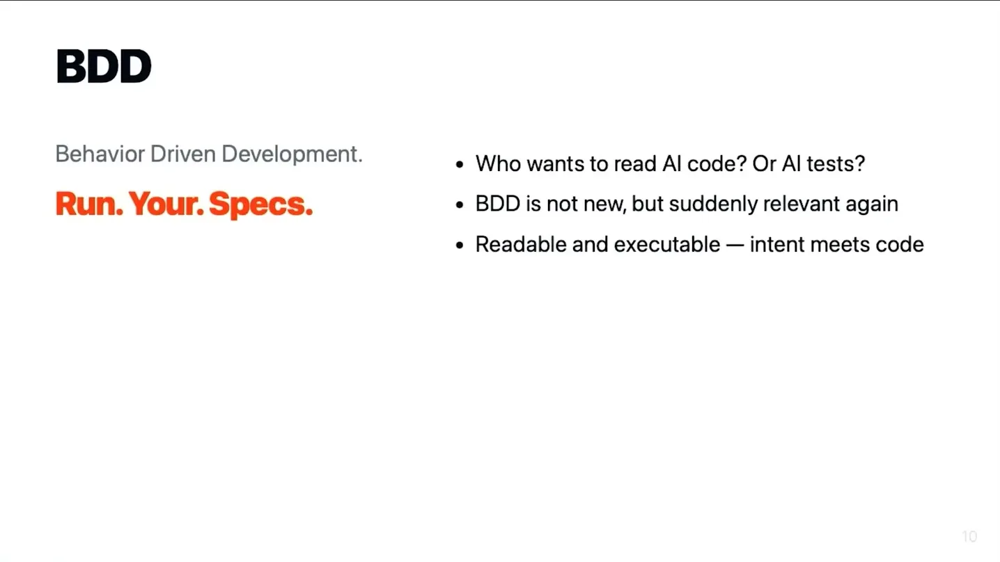
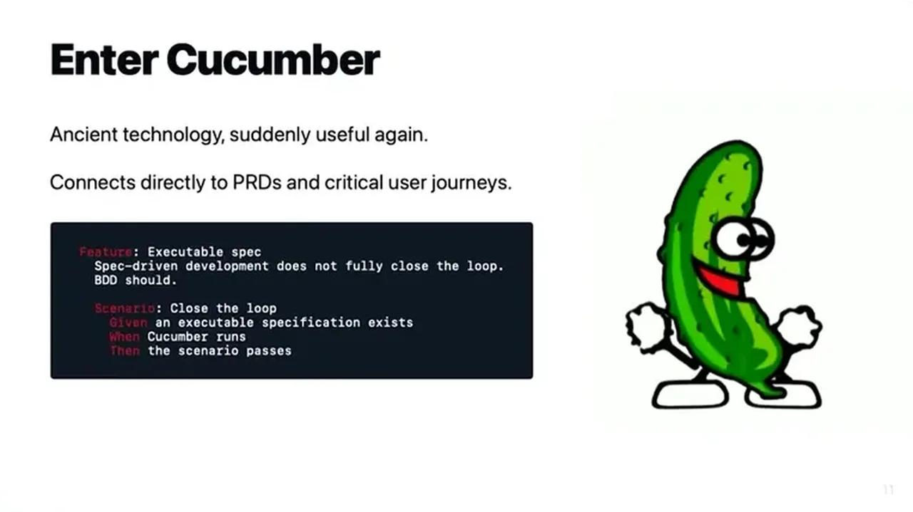
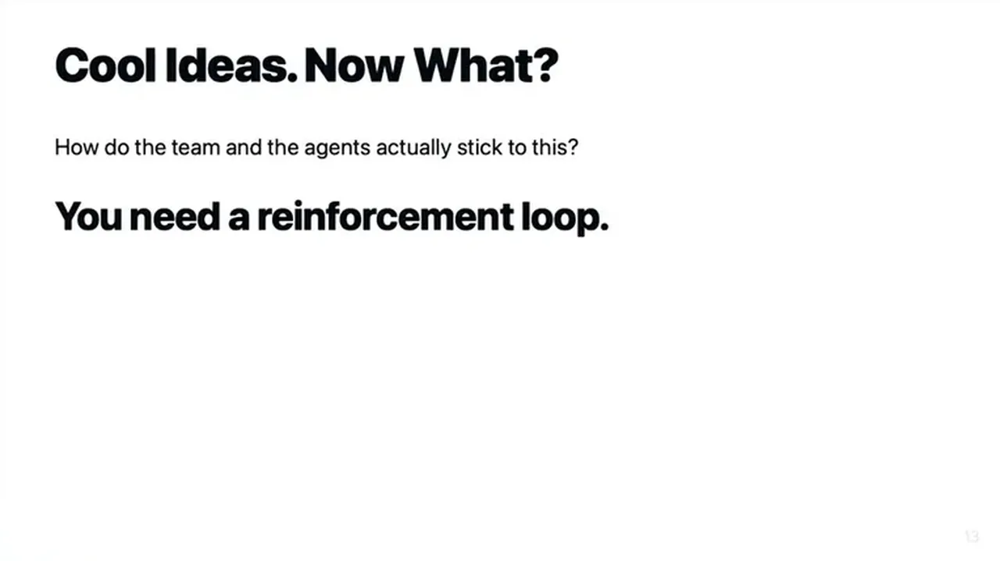

The speaker opens with the five-monkeys-and-a-ladder parable to argue humans and LLMs share the same failure mode: limited context. People forget and eventually leave; LLM context compacts and the model has no memory. Teams end up enforcing rules nobody present can explain, a problem AI can surface much sooner than it used to take with human teams.
“they have beaten up every monkey that tried to climb the ladder not knowing why. So, humans and LLMs, they suffer from the same trait.”
▶ watch at 01:03
An architecture decision record (ADR) captures why a technical decision was made and how it's enforced, with examples, reference docs, and code snippets; it can also scope itself to specific files or folders. A product requirements document (PRD) is lighter: it captures why a feature exists, what problem it solves, and the user's journey through it, and it's meant for the human 6 weeks later as much as for the agent.
“It records why you do something and how you enforce it or how you want to do that.”
▶ watch at 02:07“PRD is a product requirements document. Uh that's something lighter when you're building a feature, you describe why that thing exists and what problems it solves.”
▶ watch at 03:10
Spec-driven development leaves open the question of how you validate the product actually adheres to the spec, and AI-written tests are harder to read than AI-written code. The speaker's answer is an old tool, Cucumber-style BDD, used as an intermediate layer that's both executable and human-readable, and that can link directly back to PRDs and critical user journeys.
“And BDD is not new and shiny, but it's it can be executable and readable. So, enter Cucumber. It's almost forgotten, suddenly useful again.”
▶ watch at 04:46
Making consistent UIs with agents is described as another level of hard, so the team documents rules like button color, shape, and size, plus constraints such as only one primary button visible per page, then builds and reuses components bottom-up from small pieces so both humans and agents can check adherence.
“making consistent UIs with agents is just another level of hard. Like design system and pattern library are the way to build consistent UIs.”
▶ watch at 05:47
The enforcement loop is generic: agents deliver a pull request through git hooks that run the same tasks later executed on CI, covering linting, formatting, type checking, code duplication, and architecture checks; style and formatting debates are no longer up for discussion because they're automated. Architecture is enforced at the module level, e.g. the end-to-end BDD test suite is forbidden from importing any module that could access the database, so it's structurally limited to browser-level interaction. The speaker reports running 20-50 context compacts per session over the last half year and says it's fine because the important rules survive and the agent re-looks them up.
“we use git hooks git hooks to run predefined tasks and these tasks are later executed on a CI.”
▶ watch at 07:51“our end-to-end BDD test suite cannot access database. So, we forbid from accessing any module that could access database”
▶ watch at 08:53“It is very context heavy. Like you can run out of half of the context in um starting the research.”
▶ watch at 10:56“Um but I have no fear of context compacts. Like this actually for like last half year actually works, I think.”
▶ watch at 10:56
The throughline is that none of ADR/PRD/BDD/design-system is novel on its own -- what's new is treating them as the retrieval substrate an agent re-queries every time it loses context, which reframes documentation from a human-onboarding artifact into infrastructure the harness depends on (ours).
| Stance | Claim | t |
|---|---|---|
| asserts | An ADR records why an architecture decision was made and how it's enforced, with reference docs and code examples. | 02:07 |
| asserts | A PRD is a lighter document describing why a feature exists, what problem it solves, and the user journey. | 03:10 |
| recommends | BDD via Cucumber gives spec-driven development an executable, readable verification layer that's easier to review than typical tests. | 04:46 |
| asserts | Humans and LLMs share a limited-context failure mode: people forget and leave, LLMs context-compact and have no memory. | 01:03 |
| recommends | Design systems and pattern libraries are the way to build consistent UI with agents, same as before AI. | 05:47 |
| recommends | The team enforces rules via git hooks that run the same predefined tasks later executed on CI. | 07:51 |
| asserts | The end-to-end BDD test suite is structurally blocked from accessing the database by forbidding imports of any module that could reach it. | 08:53 |
| warns | The documentation-and-enforcement loop is very context heavy, capable of consuming half the context budget just starting research. | 10:56 |
| asserts | Despite 20-50 context compacts per session over the last half year, the speaker says the approach works because important rules survive and get re-looked-up. | 10:56 |
Machine-readable copy embedded in this page (script#ontology) and in the corpus ontology.